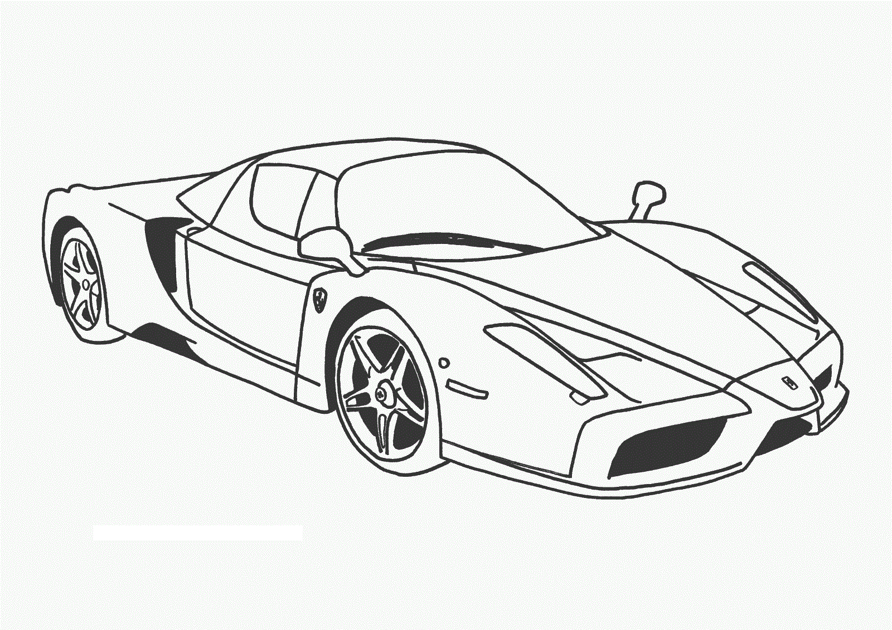
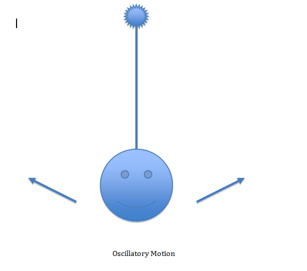
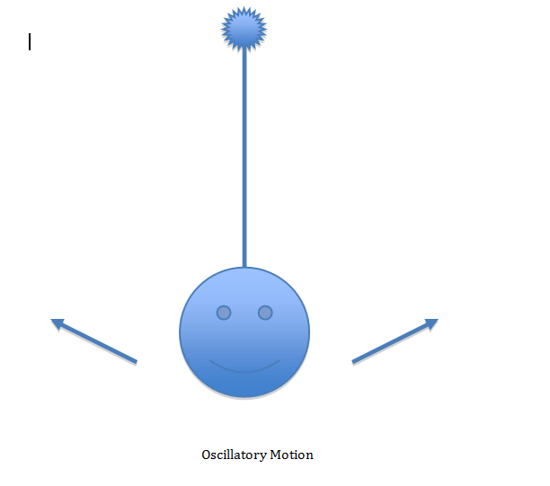
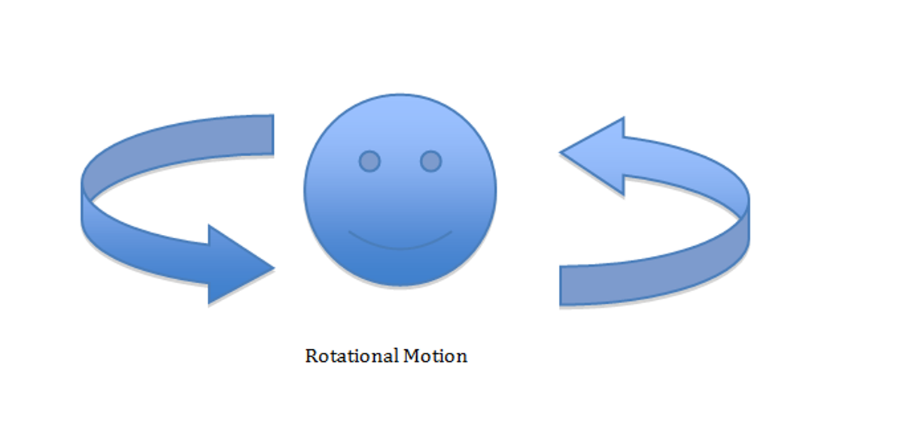

Motion
 Motion in physics is mainly about forces. Forces define as any interaction that changes the motion of an object. The question is how is motion being measured? First, you need to find how rapid an object moves, such as the speed or velocity. Acceleration is the measure of how much the velocity of an object changes. Velocities can either decrease or increase over time. Mass is also a huge factor in motion. Mass is the weight of an object and it is measured in grams. For example, a car has a greater mass than an iPhone.
There are three types of motion:
- Translational Motion
- Oscillatory Motion
- Rotational Motion
 Translational motion defines as a change of location. In other words, an object can be moving and yet it is not moving to anywhere. For example, a ten-year-old boy walks up in the morning and goes to school at a distance of 10 km, after he finishes school, he is heading back home, where he was first started. Translational motion is the distance that the ten-year-old boy travels to school and back, which is 10 km to go to school and 10 km to come back home for a total of 20 km.

Translational motion defines as a change of location. In other words, an object can be moving and yet it is not moving to anywhere. For example, a ten-year-old boy walks up in the morning and goes to school at a distance of 10 km, after he finishes school, he is heading back home, where he was first started. Translational motion is the distance that the ten-year-old boy travels to school and back, which is 10 km to go to school and 10 km to come back home for a total of 20 km.

Oscillatory motion defines as a process of moving repeatedly and fluctuates between two locations. In the previous example of a ten-year-old boy going from his house to school and coming back home from school, in the end, he is moving but he did not go anywhere. Imagine a door opens and closes, it moves but goes nowhere that is Oscillatory motion. 
Rotational motion happens when an object spins. For example, when a girl rides a bicycle, her wheels are rotating circular motion, that is a rotational motion.